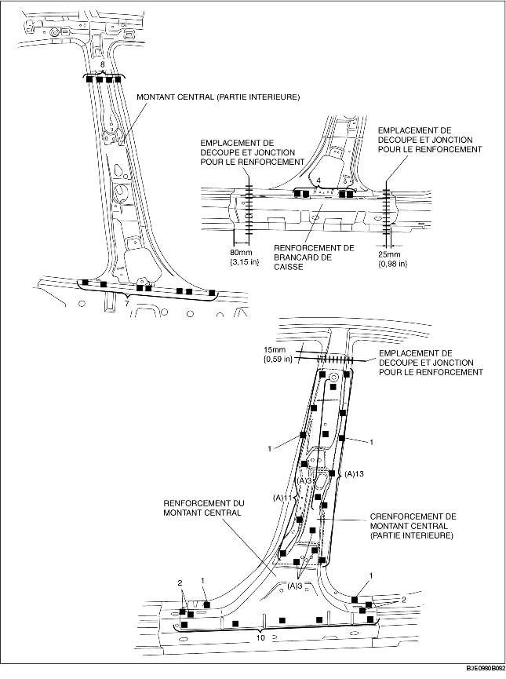
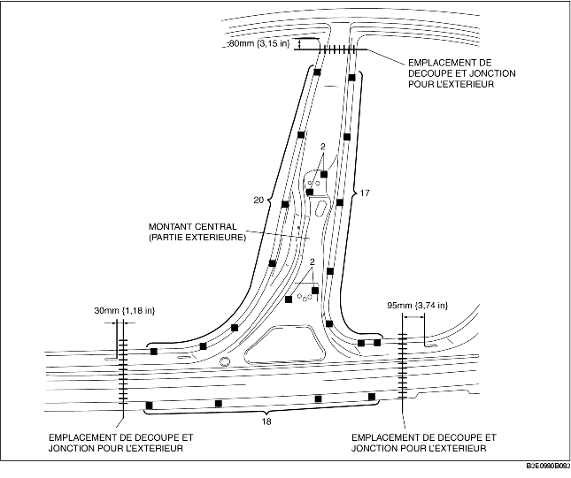

1. Au moment de joindre et de découper les parties nouvelle et actuelle, essayer de placer la partie nouvelle en position puis mesurer et ajuster la carrosserie pour qu'elle soit conforme aux dimensions standard.
2. Percer des trous pour les soudures en bouchon avant de reposer de nouvelles pièces.
3. Installer dans l'ordre suivant : partie intérieure, renforcement et partie extérieure.
4. Souder aux 30 emplacements indiqués par (A) et installer le renforcement du montant central (intérieur) au renforcement de montant central.
5. Après avoir installé temporairement les nouvelles pièces, s'assurer que les pièces associées se mettent en place de manière appropriée.

